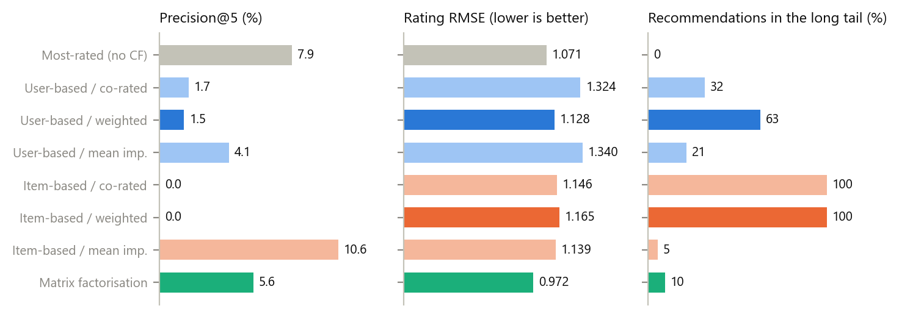
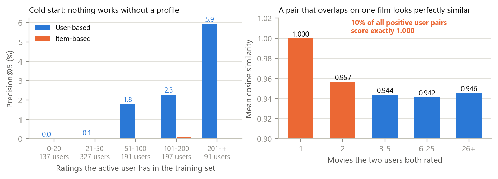
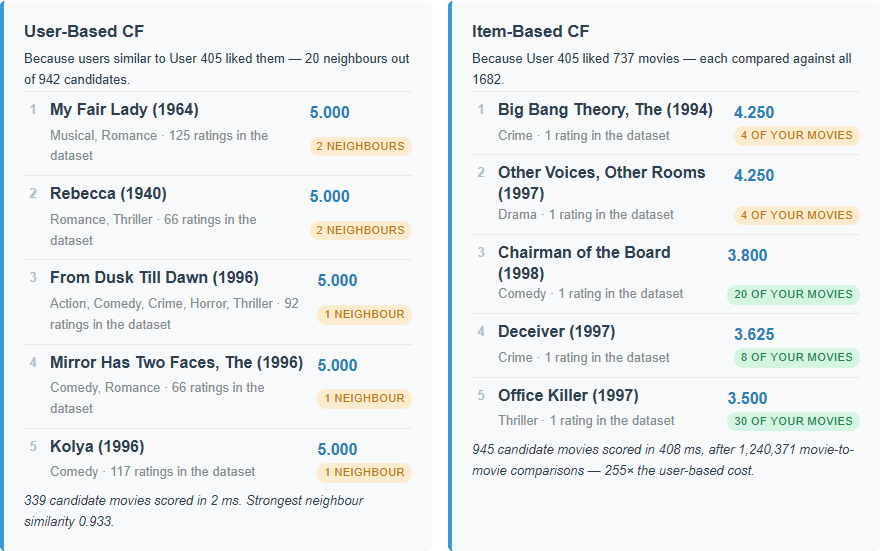
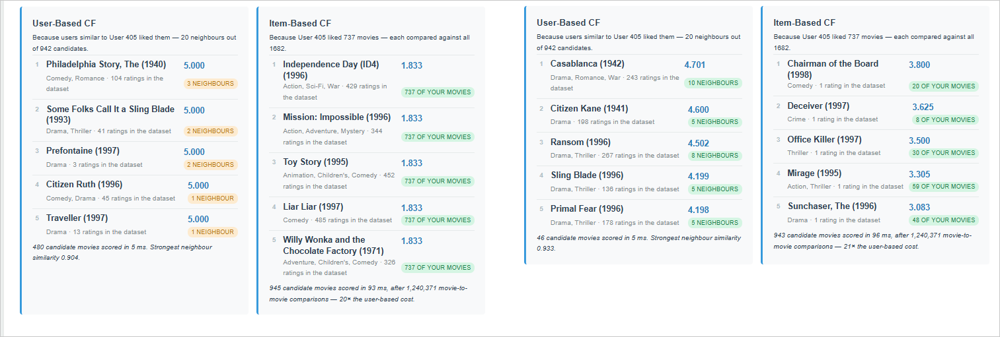

The Week 3 starter is a skeleton with four TODO stubs: the rating matrix, the cosine similarity, and both recommenders. I filled them in, declared significance weighting as the missing-value strategy, and measured what each choice is worth on a per-user temporal split of MovieLens 100k. User-based wins on both axes at once here: with 1,682 movies against 943 users the item side has 3.2× more pairs and costs 20–170× more per request in the browser, and it is also the worse recommender under every co-rated strategy. The specified formulas lose to not personalising at all — a most-rated list reaches Precision@5 of 7.9%, user-based 1.5%, item-based 0.0% — and the cause is evidence, not the similarity: requiring 10 ratings behind a prediction instead of 1 lifts user-based to 8.4% and cuts RMSE from 1.128 to 0.980, at the price of prediction coverage falling from 77.5% to 18.5%. Mean imputation barely computes a similarity at all: it squeezes every user pair into a band 1.7×10⁻⁴ wide around 0.99, 61× narrower than co-rated cosine, so the neighbour cut is decided by floating-point noise, and its apparent Top-5 quality comes from collapsing onto the popular head. Finally, 10.1% of all positive user pairs score exactly 1.000, with a median of one co-rated film. Three data bugs in the starter were fixed along the way.
Index Terms — collaborative filtering, cosine similarity, sparsity, cold start, significance weighting, MovieLens
Problem statement. The course provides a prompt and a four-file skeleton in which
buildRatingMatrix(), cosineSimilarity(), getUserBasedRecommendations() and
getItemBasedRecommendations() are empty TODO stubs [1]. The assignment asks to (i) implement
similarity over users (columns) and items (rows), (ii) choose one missing-value strategy for the sparse
matrix, and (iii) analyse user-based against item-based quality and efficiency, the trade-off between
missing-value strategies, and why CF fails for new users and items and for similarities computed from
very few co-rated items. The dataset is deliberately the same MovieLens 100k as Week 2 — byte-identical
files — so the algorithm is the only thing that changes.
Concrete example. User 405, the heaviest rater in the dataset with 737 ratings. User-based returns five films all predicted at exactly 5.000, three of them backed by a single neighbour. Item-based returns five films that have one rating each in the entire dataset — Big Bang Theory (1994), Other Voices Other Rooms (1997), Chairman of the Board (1998) — and needs 1,240,371 movie-to-movie comparisons against the user-based column's 942 (Fig. 3).
Contributions. (i) Both recommenders, three missing-value strategies and a deterministic tie-break,
as pure functions that a NumPy port reproduces number for number. (ii) A sparse formulation — including a
closed form for the imputed part of mean imputation — algebraically identical to the readable dense
definition and 15× faster, with a browser test comparing the two. (iii) An offline evaluation on a
temporal split answering the three analysis questions with numbers, including a popularity baseline that
beats most of the specified configurations. (iv) Three bugs fixed in the starter's data layer: the
19-flag genre off-by-one carried over from Week 2, the CRLF-truncated last field, and u.item being
decoded as UTF-8 when it is ISO-8859-1.
Sources: the course starter [1]; MovieLens 100k and its README for the file layout [2], [3]; Herlocker
et al. for user-based neighbourhood CF and significance weighting, which is the weighted strategy used
here [4]; Sarwar et al. for item-based CF [5]; Koren et al. for matrix factorisation [6]; Cremonesi et al.
for the point that RMSE and Top-N ranking are different problems and that a popularity baseline is the
one every recommender must actually beat [7]; Playwright [8].
Alternatives considered. Mean-centred (Pearson) prediction is the standard improvement over a plain weighted average, but the specification asks for the weighted average and the point here is to measure the specified design. Item neighbourhood restriction (aggregating over only the k most similar rated movies) is measured in Section 4 as a fix rather than adopted, since it changes the formula. Matrix factorisation in the browser needs a training pass (46 s here), so it stays offline as the reference point for the "advanced technique" row of the lecture's table.
Structures. ratingMatrix is the dense (numUsers + 1) × (numMovies + 1) grid the specification
asks for, indexed by raw id, with 0 meaning "not rated" — MovieLens ratings are 1–5, so 0 is
unambiguous. Alongside it, model holds the same data as sparse per-row lists plus per-row count, sum,
sum of squares and mean. The dense grid is 94% empty, so any full scan spends 94% of its time on
nothing: item-based CF measured 5.5 s per request over the dense matrix (14.3 s for the heaviest user)
and 0.3 s over the sparse one.
Similarity. cosineSimilarity(a, b, options) is the readable definition on two dense vectors;
similaritiesAgainstAll(primary, cross, x, stats, options) is the fast path, and the two must agree
exactly. For user-based CF primary is the user index and cross the item index; for item-based CF the
two swap — that swap is the entire difference between the algorithms. Under mean the missing entries
still have to count, so their contribution is written in closed form from the per-row totals instead of
being scanned. The browser test confirms the two paths agree to 3×10⁻⁸ over all three strategies and
both directions.
Missing values. The declared strategy is weighted: co-rated cosine damped by min(n, γ)/γ with
γ = 25 [4]. Two users who agree on two films score 1.0 under plain cosine, and two films are not
evidence. corated (plain co-rated cosine) and mean (row-mean imputation, cosine over the full vector)
are implemented so the comparison the assignment asks for can be reproduced from the UI; a run uses
exactly one and never mixes them.
Prediction and ranking. User-based keeps the N = 20 most similar users with positive similarity and
predicts the similarity-weighted average of their ratings; item-based accumulates every rated movie's
similarity to each candidate, weighted by the user's rating. Both report evidence — how many ratings
the average was taken over. Predicted ratings land on a coarse grid (one neighbour who rated a film 5
predicts exactly 5.000), so ranking is by score, then evidence, then id; without that the visible Top-5
would depend on array order.
Bug fixes in the starter. (i) Fields 5–23 of u.item are 19 flags, [unknown, Action, …, Western],
but the starter zips them against 18 genre names, shifting every label by one (Toy Story is stored as a
Crime film) and dropping Western. (ii) Splitting on '\n' leaves a \r on the last field after a
Windows checkout rewrites the files to CRLF. (iii) u.item is ISO-8859-1, but Response.text() always
decodes as UTF-8, so 30-odd accented titles arrive as replacement characters; the fix reads an
arrayBuffer() and decodes with TextDecoder('iso-8859-1'). CF never reads genres, but the app shows
them, and the titles are what the user sees.
Tools. Vanilla HTML/CSS/JS, no framework or build step; Python 3.12 with NumPy 2.3 and Matplotlib 3.10 offline; Playwright 1.58 driving Google Chrome 152 headless; Claude Code 2.1.278 with Claude Opus 5.
Setup. MovieLens 100k: 943 users × 1,682 movies = 100,000 ratings, a matrix 5.0% full. Per user the most recent 20% of their ratings is held out, giving 80,000 training and 20,000 test ratings; a held-out rating of 4 or 5 counts as relevant, which leaves 907 users with something to find. Reported per model: RMSE and prediction coverage over the test ratings it can score, hit-rate and Precision@5 over the Top-5, the share of recommendations outside the 20% most-rated head, and how much of the catalogue is ever recommended.
Result 1 — the cost and quality of the two directions both favour users here.
| Rows compared | Pairs | Similarity matrix | Offline | In the browser | |
|---|---|---|---|---|---|
| User-based | 943 users | 444,153 | 3.4 MB | 0.07 s | 942 comparisons, 4–5 ms |
| Item-based | 1,682 movies | 1,413,721 (3.2×) | 10.8 MB | 0.11 s | 1,240,371 comparisons, 95–624 ms |
The lecture's rule is that item-based pays off when there are more users than items. MovieLens 100k is the other way round, and the measurement follows: the item side has 3.2× the pairs and 3.2× the memory, and for user 405 in the browser it needs 1,317× as many comparisons, because each of the user's 737 movies must be scored against all 1,682. The latency that produces varies with the machine — 20× to 170× across the runs recorded here — but its sign never does.

Fig. 1. Every configuration on the same temporal split. Only item-based with mean imputation beats the non-personalised most-rated list on Precision@5, and it does so by recommending almost nothing outside the popular head.
| Model | RMSE | Pred. coverage | Hit-rate@5 | Precision@5 | Long tail | Catalogue |
|---|---|---|---|---|---|---|
| Most-rated (no CF) | 1.071 | 99.6% | 28.4% | 7.9% | 0.0% | 2.6% |
| User-based / co-rated | 1.324 | 22.8% | 7.8% | 1.7% | 31.7% | 23.2% |
| User-based / weighted | 1.128 | 77.5% | 6.0% | 1.5% | 62.8% | 30.2% |
| User-based / mean imputation | 1.340 | 33.7% | 18.3% | 4.1% | 21.5% | 13.0% |
| Item-based / co-rated | 1.146 | 99.6% | 0.1% | 0.0% | 100.0% | 13.3% |
| Item-based / weighted | 1.165 | 99.6% | 0.1% | 0.0% | 100.0% | 13.5% |
| Item-based / mean imputation | 1.139 | 99.6% | 36.4% | 10.6% | 5.5% | 22.9% |
| Matrix factorisation (k=20) | 0.972 | 100.0% | 20.6% | 5.6% | 9.7% | 6.5% |
Result 2 — the missing-value strategies trade three different things. corated is the simplest and
the most biased: it will call two users identical on the strength of one shared film, so the 20 selected
neighbours are often the 20 users with the least overlap, and only 22.8% of test ratings can be
predicted at all. weighted fixes exactly that — the same neighbours, damped by how much they overlap —
raising coverage to 77.5% and cutting RMSE to 1.128, the best of the co-rated family. mean is the
cheapest to state and the hardest to defend: replacing 94% of each vector with one constant makes every
pair look alike, and across user 1's top 20 neighbours the similarity spread is 1.7×10⁻⁴ against
co-rated cosine's 1.1×10⁻², 61× narrower. What is left is mostly popularity, which is why its Top-5
looks good (10.6% Precision@5 item-based) while only 5.5% of its recommendations come from outside the
head. Matrix factorisation is the accurate and expensive one: RMSE 0.972 at full coverage, for 46 s of
training against 0.07 s to build a similarity matrix.
Significance weighting has its own trade-off. Sweeping γ for user-based CF, RMSE falls monotonically (1.324 at γ=1 to 1.107 at γ=100) while Precision@5 peaks early and then collapses (1.7% → 3.9% at γ=5 → 0.4% at γ=100). γ=25 buys coverage and rating accuracy; a deployment tuned for the ranked list would pick γ≈5. The two objectives do not agree, which is Cremonesi's point [7].
Result 3 — what fails is the amount of evidence, not the formula.
| Minimum ratings behind a prediction | 1 | 3 | 5 | 10 |
|---|---|---|---|---|
| User-based RMSE | 1.128 | 1.038 | 1.009 | 0.980 |
| User-based Precision@5 | 1.5% | 3.2% | 5.3% | 8.4% |
| Prediction coverage | 77.5% | 53.2% | 39.4% | 18.5% |
| Recommendations in the long tail | 62.8% | 28.3% | 9.0% | 1.6% |
Nothing about the similarity changes across that table; only the requirement that a prediction rest on more than one rating. It takes user-based from well below the popularity baseline to just above it — and takes the long tail from 62.8% to 1.6%, so the accuracy is bought by retreating to the head.
Item-based needs the mirror-image guard, on the candidate rather than the neighbours: restricting candidates to movies with at least 25 training ratings moves its Precision@5 from 0.0% to 1.1%, and aggregating over only the 20 most similar rated movies moves it to 1.6% at 56.7% catalogue coverage — the broadest configuration measured, and still a quarter of the popularity baseline's precision.

Fig. 2. Left: Precision@5 against how much the active user has rated — CF has nothing to say to the 137 users with 20 ratings or fewer. Right: mean similarity against how many films the pair actually shares. The thinner the evidence, the higher the score.
Result 4 — cold start and sparsity, measured. 69 movies have no training rating at all and 443 (26.3% of the catalogue) have fewer than five, so a quarter of the catalogue cannot be reached by any neighbourhood method. On the user side, Precision@5 is 0.0% for the 137 users with at most 20 ratings and rises monotonically to 5.9% for the 91 users with more than 200. On the pair side, of the 418,472 user pairs with positive similarity, 17.0% rest on at most two co-rated films and 10.1% score exactly 1.000, with a median of one co-rated film. Mean similarity falls with evidence — 1.000 at one shared film, 0.957 at two, 0.942 at 6–25 — so a plain ranking by similarity is, in its top ranks, a ranking by ignorance.

Fig. 3. Left: the starter, whose four stubs return nothing. Right: the finished app for user 405 — five predictions of exactly 5.000 backed by one or two neighbours, and an item-based column of films with a single rating each.
Verification. tests/check_cf.py drives the page in headless Chrome and runs 36 checks, all passing:
the sparse similarity equals the dense definition to 3×10⁻⁸ for all three strategies in both directions;
both Top-5 columns match the NumPy reference exactly for all 24 corated and weighted configurations
(the mean ones are checked numerically instead, since the 1.7×10⁻⁴ spread makes the neighbour cut
unstable between float32 implementations); the evidence threshold is enforced; and accented titles survive
the ISO-8859-1 decode.
Answers to the three analysis questions.
Failure case and root cause. The specified predictors are weighted averages, and an average is invariant to any factor applied uniformly to its weights. Significance weighting therefore only bites where it changes which neighbours are selected — user-based has such a selection step, item-based does not, which is why weighting improves user-based coverage by 55 points and does nothing for item-based. An obscure film co-rated by one enthusiast inherits that enthusiast's 5 however hard the similarity is damped: the guard has to be on the count, not the weight.
What worked. Writing the readable dense definition first and the sparse one second, then having the browser test compare them, made a 15× speed-up safe to adopt and caught the ISO-8859-1 bug, because NumPy and the page disagreed on one title. Printing the evidence beside every prediction also changed how the app reads: "5.000" and "5.000 from one neighbour" are not the same claim.
What surprised me. That a non-personalised most-rated list beats almost every configuration in the specification, and that the one which beats it does so by imitating it. And that mean imputation's similarities are numerically unstable enough for the browser and NumPy to disagree on the neighbour set — I expected a bias, not a loss of resolution.
Next improvement. Mean-centre the ratings before averaging: much of the error here is that users disagree about what "4" means, and the cosine of two raw rating vectors is dominated by both being positive numbers around 3.5 — which is also why every similarity sits above 0.9 to begin with.
AI tools used. Claude Code 2.1.278 (VS Code extension), model Claude Opus 5, one session.
How AI was used. Search / reading: cloning [1] and reading week3/; the u.item layout in [3].
Code generation: cf.js, the rewritten data.js, script.js, index.html and style.css, the
experiments/ scripts, tests/check_cf.py and the corrected prompt.md. Analysis: running the offline evaluation and the browser test, and drafting this report.
What I personally verified. I ran every check by hand against a local python -m http.server;
screenshots are in manual-test/. The starter returns "Implement the TODO above" in both columns and still
reports Toy Story as Children's, Comedy, Crime. The finished app reproduces the user 405 columns of
Fig. 3 exactly — the five predictions of 5.000 on one or two neighbours, and the item-based films with a
single rating each. Switching to mean imputation replaces that column with Independence Day, Mission:
Impossible and Toy Story, all at 1.833; raising the evidence threshold to 5 replaces the user-based column
with Casablanca, Citizen Kane and Ransom, every badge green (Fig. 4). The accented title reads
C'est arrivé près de chez vous, and tests/check_cf.py reported 36/36. My own cost ratio was 23×
(4 ms against 95 ms) where the instrumented run recorded 173×, which is why Section 4 quotes a range.

Fig. 4. The two switches, checked by hand on user 405. Left: mean imputation collapses item-based onto the blockbusters, every score identical at 1.833. Right: requiring five ratings behind a prediction turns the user-based column from 5.000-on-one-neighbour into well-evidenced classics.
What I trusted without verification. That the MovieLens timestamps order each user's ratings correctly, since the split depends on them; that 30 SGD epochs leave the matrix-factorisation baseline fairly trained rather than short-changed.
Session log. kosychev_a03_session.json is the unmodified Claude Code log of this work.
[1] S. Jin, "RecSys-LLMs: Recommender Systems course repository (week3)," GitHub, commit c00cfa1, 2026. [Online]. Available: https://github.com/dryjins/RecSys-LLMs/tree/main/week3. [Accessed: 2026-09-29].
[2] F. M. Harper and J. A. Konstan, "The MovieLens Datasets: History and Context," ACM Trans. Interact. Intell. Syst., vol. 5, no. 4, pp. 1–19, 2015.
[3] GroupLens Research, "MovieLens 100K Dataset (README: u.item, u.data)," University of Minnesota. [Online]. Available: https://grouplens.org/datasets/movielens/100k/. [Accessed: 2026-09-29].
[4] J. L. Herlocker, J. A. Konstan, A. Borchers, and J. Riedl, "An Algorithmic Framework for Performing Collaborative Filtering," in Proc. 22nd ACM SIGIR, 1999, pp. 230–237.
[5] B. Sarwar, G. Karypis, J. Konstan, and J. Riedl, "Item-Based Collaborative Filtering Recommendation Algorithms," in Proc. 10th Int. Conf. World Wide Web (WWW), 2001, pp. 285–295.
[6] Y. Koren, R. Bell, and C. Volinsky, "Matrix Factorization Techniques for Recommender Systems," Computer, vol. 42, no. 8, pp. 30–37, 2009.
[7] P. Cremonesi, Y. Koren, and R. Turrin, "Performance of Recommender Algorithms on Top-N Recommendation Tasks," in Proc. 4th ACM Conf. Recommender Systems (RecSys), 2010, pp. 39–46.
[8] Microsoft, "Playwright for Python — Installation," Playwright Docs. [Online]. Available: https://playwright.dev/python/docs/intro. [Accessed: 2026-09-29].